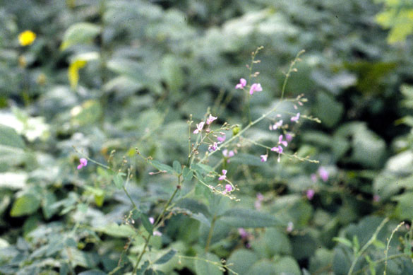
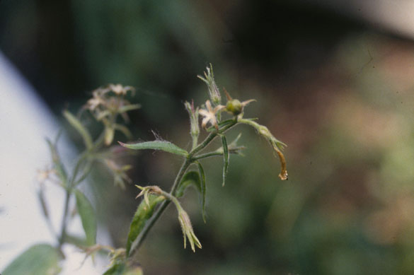
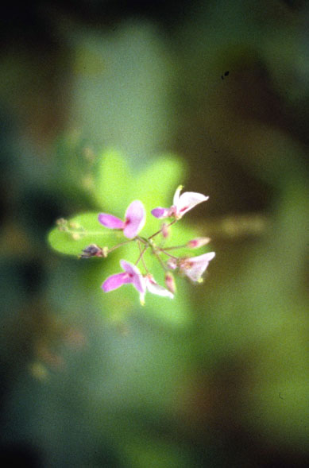
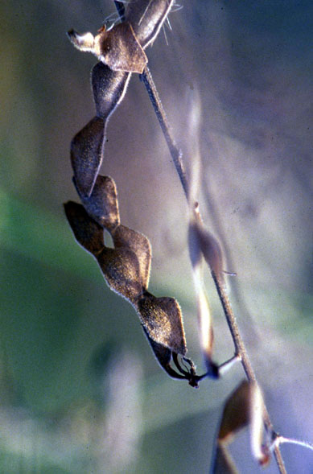
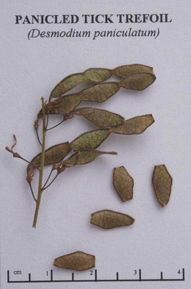

Desmodium paniculatum
Family: Fabaceae
Panicled Tick Trefoil
Swink/Wilhelm #6




FLOWERING: July - August.
SEED TIMING: Mid-September to Mid-October.
HABITAT: Dry woodlands, often sandy.
DIAGNOSTIC FEATURES: 2 - 4 feet high. Slender leaflets of variable width; alternate; lanceolate or oblong-lanceolate to linear. Leaf stalks are 1/2 inch or more in length. Terminal panicle much branched. Flowers lavender to reddish-purple (rarely white), fading to blue. Loments have 3 to 6 joints.
TO PICK: Pods (called loments) of Tick Trefoils usually have more than one joint and are covered with hooked hairs that cling to clothing. Each section of the loment is rhombic to triangular in outline, more than half as broad as long and never more than 3/4 inch long. Pick entire loment, which turns greenish brown when ripe.